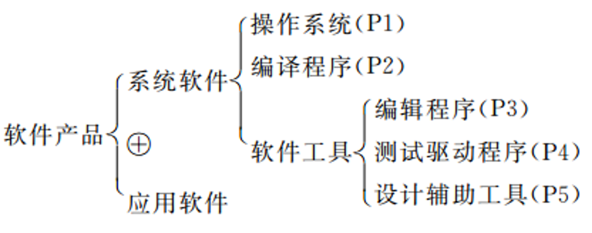

#需求分析的任务
- 确定对系统的综合要求
- 分析系统的数据要求
- 导出系统的逻辑模型
- 修正系统开发计划
🔖系统的综合要求包括：功能需求、性能需求、可靠性和可用性需求、出错处理需求、接口需求、约束、逆向需求和将来可能提出的要求。
🔖通常用数据流图、实体-联系图、状态转换图、数据字典和主要的处理算法描述系统的逻辑模型。
#分析建模
需求分析过程应建立三种模型：
- 数据模型(使用实体-联系图，即 E-R 图)
- 功能模型(使用数据流图)
- 行为模型(使用状态转换图)
#实体-联系图
数据模型包含三种相互关联的信息：数据对象、数据对象的属性及数据对象彼此间相互连接的关系。
#数据对象
数据对象是对软件必须理解的复合信息的表示。所谓复合信息是指具有一系列不同性质或属性的事物，因此，仅有单个值的事物(例如长度，名称)不是数据对象。可以由一组属性来定义的实体都可以认为是数据对象。（联系或称关系也可能有一组属性，但它不是数据对象）
数据对象只封装了数据，没有包含作用于这些数据上的操作。
#属性
属性定义了数据对象的性质和特征。
为了唯一地标识数据对象的某一个实例，定义数据对象中的一个属性或几个属性为关键字，简称键 (key)。
#联系
数据对象彼此之间相互连接的方式称为联系(关系)。
-
一对一联系(1∶1)
🌰一个班级有一位班长．一个班长只能在一个班级任职，班级和班长这两个实体的联系是一对一的。
-
一对多联系(1∶N)
🌰一个班级有多个班干部，一个班干部只能在一个班级任职，班级和班干部这两个实体的联系是一对多的。
-
多对多联系(M∶N)
🌰一个学生可以选修多门课，一门课可以有多个学生选修，学生和课程这两个实体之间的联系是多对多的。
#表示方法
通常用矩形框代表实体，用连接相关实体的菱形框表示关系。用椭圆形或圆角矩形表示实体(或关系)的属性。并用无向边把实体(或关系)与其属性连接起来。
#状态转换图(STD)
状态转换图(State Transition Diagram, STD)通过描绘系统的状态及引起系统状态转换的事件，来表示系统的行为。
#状态
状态是任何可以被观察到的系统行为模式，一个状态代表系统的一种行为模式。
在 STD 中用圆形框或椭圆框表示状态，通常在框内标上状态名。状态规定了系统对事件的响应方式。
系统对事件的响应，既可以是做一个(或一系列)动作，也可以是仅仅改变系统本身的状态，还可以是既改变状态又做动作。
在状态图中定义的状态主要有：初态、终态和中间状态。在一个状态图中只能有一个初态，终态可以有零个或多个。
#事件
事件是在某个特定时刻发生的事情，它是对引起系统从一个状态转换到另一个状态的外界事件的抽象。简而言之，事件就是引起系统状态转换的控制信息。
在状态图中，从一个状态到另一个状态的转换用箭头线表示，箭头表明转换方向，箭头线上标上事件名。必要时可在事件名后面加一个方括号，括号内写上状态转换的条件（守卫条件）。也就是说，仅当方括号内所列出的条件为真时，该事件的发生才引起箭头所示的状态转换。
#符号
- 初态用实心圆表示；终态用同心圆（内圆为实心圆）表示。
- 中间状态用圆角矩形表示，用两条水平横线分为上中下三部分。上面为状态名，必须有的；中间为状态变量的名字和值（比如，timer=0），可选的；下面为活动表（语法格式为：事件名/动作表达式），可选的。 活动表 🌰：do/开始录音；exit/播放音乐
- 状态间转换用有向箭头，箭线上标明事件表达式。
#其他图形工具
#层次方框图
树形结构，树形结构的顶层是一个单独的矩形框，它代表完整的数据结构，下面各层的矩形框代表这个数据结构的子集，最底层的各个框代表组成这个数据的实际数据元素。
#Wariner图
花括号内的信息条目构成顺序关系；花括号从左至右排列表示树型层次结构；符号 “⊕” 表示不可兼具的选择关系；“￣” 表示“非”；圆括号内的数字表示重复次数，（1,n）表示重复结构，（1）或不标次数表示顺序结构，（0,1）表示选择结构。

#IPO图(Input Process Output Diagram)
左边框中列出有关的输入，中间框中列出主要的处理，右边框中列出产生的输出。处理的顺序暗示了执行的顺序，箭头指出数据通信的情况。